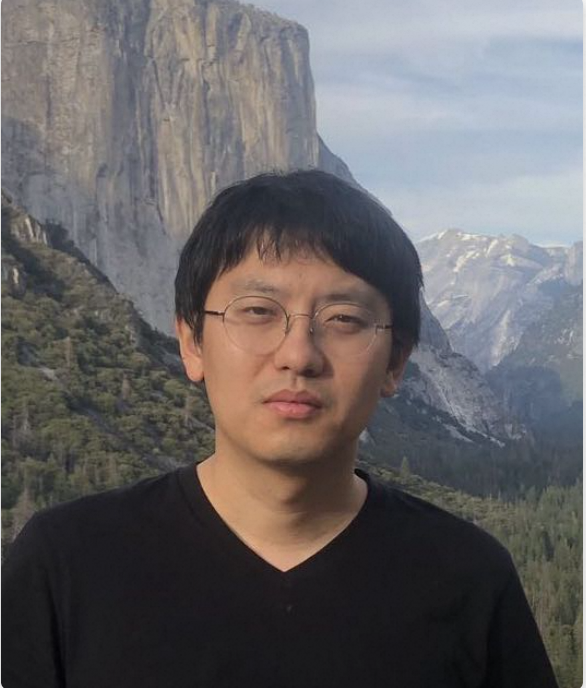
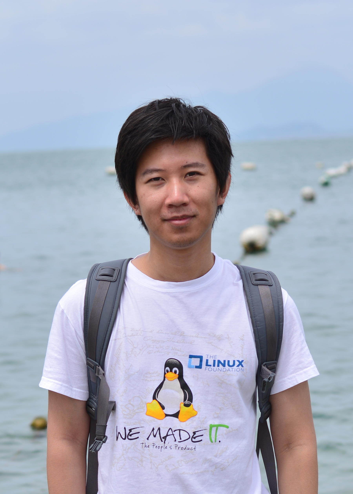

Jiakai Tang
Renmin University of China · Primary contact
Ph.D. candidate working on LLM-based recommender systems and faithful simulation of shopping behavior.
Academia × industry
Nine organizers spanning China, Singapore, and the Netherlands, with expertise across agentic recommendation, autonomous research, simulation, and trustworthy information retrieval.
Organizers
The team combines academic research, large-scale deployment, and workshop organization experience at WSDM, WWW, SIGIR, ECIR, and related venues.
Renmin University of China · Primary contact
Ph.D. candidate working on LLM-based recommender systems and faithful simulation of shopping behavior.
Leiden University
Ph.D. candidate researching LLM-based recommender systems, generative retrieval, and agentic recommendation.
National University of Singapore
Ph.D. candidate working on recommender systems, LLM agents, and autonomous information seeking.
Alibaba Group
Algorithm expert focused on large-scale recommendation, generative recommendation, and e-commerce agents.
Kuaishou Technology
Applied scientist researching recommender systems, reinforcement learning, generative methods, and AI for science.

Leiden University
Associate Professor working at the intersection of information retrieval, NLP, and conversational information seeking.
Renmin University of China
Associate Professor researching recommendation, reinforcement learning, causal inference, agents, and social simulation.

University of Chinese Academy of Sciences
Associate Professor working on recommender systems, natural language processing, and safety-oriented AI.
University of Amsterdam
Distinguished University Professor of AI and Information Retrieval and Scientific Director of ICAI.
Contact
Contact the primary organizer for CFP, review, program, or participation questions.